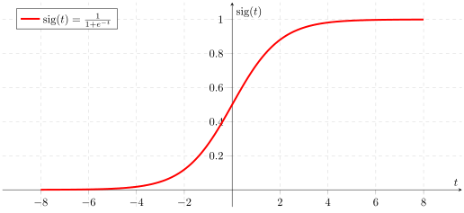

Machine Learning
No magic, just math!
Dokument- / Spam-Klassifizierung
Optical Character Recognition (OCR)

Gesichtserkennung
Bilderkennung
Clinical Decision Support Systems
Wetter- / Katastrophenvorhersage

Selbstfahrende Autos
Künstliche Intelligenz
Einführung
Machine learning is the field of study that gives computers the ability to learn without being explicitly programmed.
– Arthur Samuel (1959)
Die Aufgabe
| Eigenschaft Feature | Wert |
|---|---|
| Höhe | 1.8m |
| Augenfarbe | grün |
| … | |
- Wert
- Klasse / Label
Supervised Learning
Der Algorithmus lernt anhand von gelabelten Beispieldaten.
Unsupervised Learning
Der Algorithmus muss die Struktur der Daten selbst erkennen.
Überblick über die Algorithmen
Value Prediction
Linear Regression
Tree-based Regression
Classification
K-Nearest Neighbors
Naïve Bayes
Decision Trees
Logistic Regression
SVMs
Neural Networks
Clustering
K-Means
Hierarchical Clustering
Mixture Models
Linear Regression
| Getrunkenes Wasser (ltr.) | Arbeitseffizienz (%) |
|---|---|
| 0.1 | 2 |
| 0.5 | 40 |
| 1.5 | 80 |
| 3.0 | 100 |
| 3.5 | 85 |
| 2.5 | ??? |


Suche den passendsten Polynomgrad:
\(y = \Theta_1x + \Theta_2\)
\(y = \Theta_1x^2 + \Theta_2x + \Theta_3\)
\(y = \Theta_1x^3 + \Theta_2x^2 + \Theta_3x + \Theta_4\)
…
Und wo lernt der Algorithmus jetzt?

\(y = \Theta_1x^2 + \Theta_2x + \Theta_3\)
- Erstelle eine Funktion mit den Variablen \(\Theta_{1-3}\), die die Abweichung summiert (Cost Function)
- Finde den Minimalwert dieser Funktion mit einem Annäherungsalgorithmus wie Gradient Descent
- Nutze diese Werte für \(\Theta_{1-3}\) um das passendste Modell zu erhalten
Das machen die Libraries für Dich! \o/
Mehrere Features
Features: \(x_{(1)}\) und \(x_{(2)}\)
Beide linear:
\(y = \Theta_1x_{(1)} + \Theta_2x_{(2)} + \Theta_3\)
\(x_{(1)}\) quadratisch, \(x_{(2)}\) linear:
\(y = \Theta_1x_{(1)}^2 + \Theta_2x_{(1)} + \Theta_3x_{(2)} + \Theta_4\)
Linear Regression - Fakten
- Nach dem Trainieren sehr effizient
- Oft in Recommendation Systems im Einsatz
- Wahl der richtigen Features / des Polynomgrades ist oft schwer
Overfitting und Underfitting
\(y = \Theta_1x^2 + \Theta_2x + \Theta_3\)
Das Modell passt gut!
Folgt dem Trend, aber lässt Ausreißer aus.

\(y = \Theta_1x + \Theta_2\)
Modell ist zu einfach: Underfitting / Low Variance / High Bias!
Schlechte Vorhersagen auf dem Trainingsset und vermutl. auch später

\(y = \Theta_1x^{6} + \Theta_2x^{5} + \ldots\)
Modell ist zu komplex: Overfitting / High Variance / Low Bias!
Das Modell nimmt jeden Messfehler / Ausreißer auf.
K-Means
- Wähle die Anzahl von Clustern und deren vorläufige Zentren
- Weise die Punkte den nächsten Clustern zu
- Verschiebe Zentrum in den geom. Mittelpunkt
K-Means - Fakten
- Der Algorithmus ist simpel und skalierbar
- Die Anzahl der gewünschten Cluster muss festgelegt werden
- Das Ergebnis hängt stark von der Wahl der anfänglichen Zentren ab
Neural Networks

\(y = g(\Theta_1 x_1 + \Theta_2 x_2 + \Theta_3 x_3)\)
\(\Theta_i\): Gewichtungen / Parameter des Netzes. Werden durch Gradient Descent angelernt.
\(g\): Die Sigmoid-Funktion, die die Ausgabe auf Wert zwischen 0 und 1 bringt:
\(g(z) = {1 \over {1 + e^{-z}}}\) 
Wenn \(y < 0.5\) wird der Datensatz als Klasse 1 klassifiziert, sonst Klasse 2.

Hidden Layers:
Layers zwischen Input- und Output-Layer, um mehr Komplexität / Varianz in das Modell zu bringen.
Achte auf Overfitting und Underfitting!
Teste unterschiedlich viele Hidden Layers mit unterschiedlich vielen Neuronen.

Du brauchst mehr als 2 Klassen? Kein Problem!
Nutze für jede Klasse ein \(y\). Die Klasse mit dem höchsten Wert zwischen 0 und 1 wird zugewiesen.
Neural Networks - Fakten
- Sehr flexibel und geeignet für die meisten Klassifizierungsprobleme
- Googles AlphaGo nutzt mehrere Neural Networks
- Sehr rechenintensiv bei vielen Layern / Neuronen
Demo
Beliebte Libraries
| Java |
Apache Spark (MLlib)
|
Apache Mahout |
|---|---|---|
| Python |
Scikit-learn
|
PyBrain
|
| "Big Players" |
Tensorflow (Google)
|
DSSTNE (Amazon) |
Der Erfolg hängt stärker von den Daten ab
als von der genutzten Library!
Also einfach Daten rein und alles läuft?
Tipps
- Nutze den Algorithmus, der am besten zu den Daten / dem Problem passt
- Finde die richtigen Einstellungen für den Algorithmus
- Visualisiere Teile Deiner Daten
- Probiere verschiedene Konfigurationen (automatisiert) durch
- Einfach mal Modell und/oder Features hinterfragen
Wie fange ich an?
- Machine Learning @ Coursera (Link)
- Machine Learning in Action von Peter Harrington (Link)
- Einfach mit beliebten Libraries und Testdaten loslegen